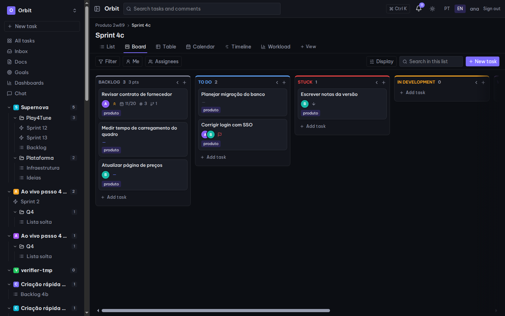
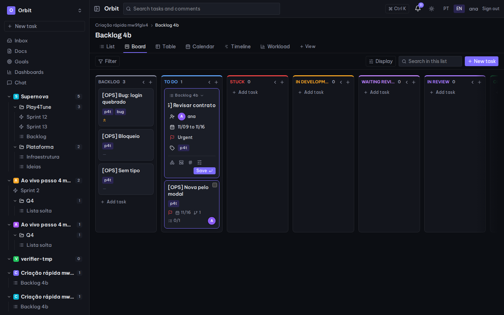
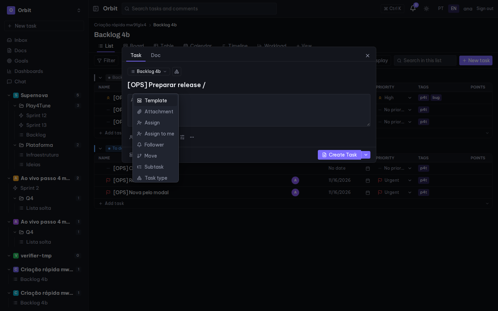
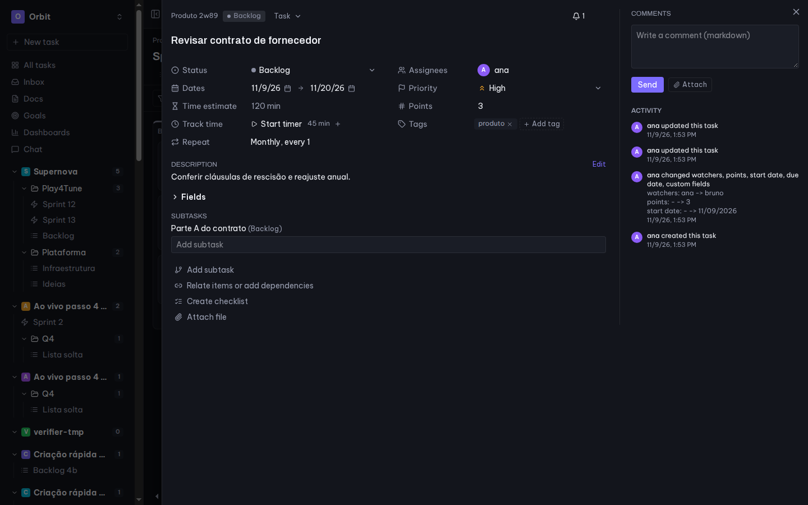
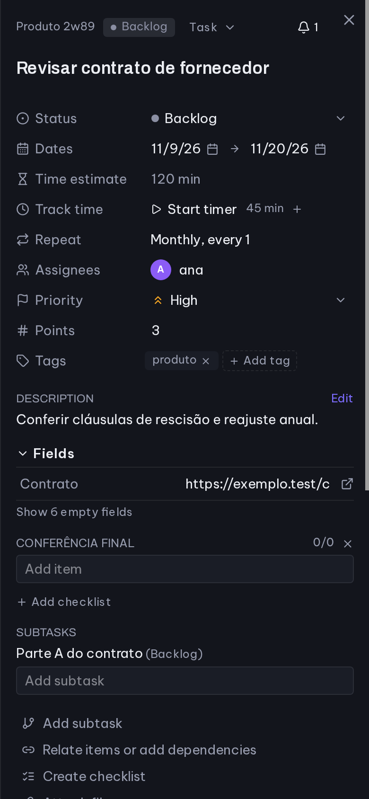

Create without leaving the board
The composer opens right in the column. Pick the list, assign, set dates and priority, tag it, and press Enter for the next one.
Spaces, lists and sprints, a fast board and table, saved views and one board with every task, plus its own login, read-only viewers and guests, and a ClickUp importer.
The demo runs on a personal computer and may be offline. It holds fictional data, is shared by every visitor and resets every night.

Everything a product team used every day in ClickUp, rebuilt end to end.
Create tasks at the top of any column or group with assignee, dates, priority and tags as chips. Enter keeps adding.
One board and table with every task you can see across all spaces, with the source list on each card.
Assignee filter with counts per person, "Unassigned" first and a one-click "Me".
Create, rename, share and duplicate views per list, with their own filters and layout.
Fixed GitHub, Figma, Notion and Prints slots on every task. Pull requests link themselves by webhook.
Spaces, folders, lists and sprints, locked default statuses plus custom ones, rules for new tasks and task types.
Email and password, single-use invite links, revocable sessions, read-only viewers and guests limited to shared lists.
Share a link and every answer becomes a task in the right list, with rate limits and bot protection.
Task templates per space, and scoped API tokens that are shown once and never exceed your role.
Every change on record with filters, plus webhook deliveries and sync status, with secrets shown only as set or not set.
Brings spaces, lists, statuses, tasks, comments and custom fields across in one run.
Real screens from the running app, with sample data.
The composer opens right in the column. Pick the list, assign, set dates and priority, tag it, and press Enter for the next one.

Type "/" in the task name to assign, follow, move, add a subtask or start from a template.

Compact properties, time tracking, recurrence, subtasks and checklists, with comments and activity side by side.

Every screen adapts to mobile, in English and Portuguese, light or dark.

Clean architecture on the API, a typed React front end, and tests at every layer.